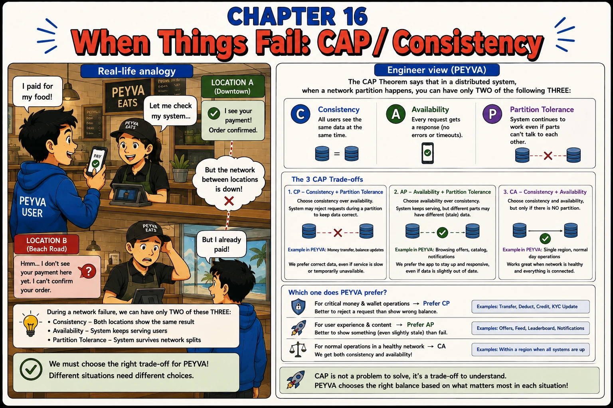

Chapter 16
When Things Fail: CAP / Consistency
During a network failure, you can keep only two of these three: Consistency, Availability, Partition Tolerance.

1. Intuition
- Chapter 15 gave peyva two locations.
- What happens when the network between them goes down and Alice still wants to pay?
- Two branches cut off from each other can't stay both perfectly accurate and perfectly available. One has to give.
2. Concepts
- Consistency (C). All users see the same data at the same time.
- Availability (A). Every request gets a response, no errors or timeouts.
- Partition Tolerance (P). The system keeps working even if parts of it can't talk to each other.
- CAP Theorem. The choice only binds while the network is broken. On a healthy day peyva has all three, which is why the decision is easy to forget until it matters.
3. Under the Hood
- CP: choose consistency over availability. peyva rejects requests during a partition to keep data correct.
- AP: choose availability over consistency. peyva keeps serving, even with stale data.
- CA: only possible with no partition, a single region on a normal day.
- peyva's rule of thumb: CP for money and account operations, AP for browsing and notifications. The choice depends on what each request actually needs.
4. Build It Hands-on Building in Go, change in Chapter 0
- The Teller learns what to do when the Vault's two copies can't reach each other.
Tree-of-Thought. Branch, evaluate each branch, prune, then commit. Ask for an implementation and you get one design with its reasoning hidden; ask for several scored against stated criteria and the choice comes into the open where you can disagree with it.
Documented in The Prompt Report: Decomposition, Tree-of-Thought
Build this in Go, standard library only.
Continue the codebase from earlier chapters.
Code in peyva/<component>/, one folder per component.
Money: exact decimal or integer minor units, never floating point, two decimal places.
The goal and invariants are in peyva/goal.md.
The Vault's primary copy replicates asynchronously to a second copy. I need to decide what the Teller does when the two can't reach each other.
Don't write code yet. Propose at least three genuinely distinct strategies for handling the partition: not three variations on one idea. For each, work out what a customer experiences during the partition, what happens to a payment accepted mid-partition, and what manual work recovery needs.
Then prune. Eliminate the ones that are unacceptable for money movement specifically, and say what disqualified each. Recommend one of the survivors, and name the condition that would change your recommendation.
Then implement your recommendation. Treat an unreachable second copy as a partition rather than ignoring it, and keep balance enquiries served from whichever copy is reachable even while payments are refused.
Done when disconnecting the second copy makes payments fail loudly while enquiries still succeed, and reconnecting restores payments with no restart.
The portal
- The portal has to be honest about a balance it is not sure of.
The portal is plain HTML and CSS. No framework, no build step, no dependencies.
It lives in peyva/portal/. Anything it needs from the server is Go, standard library only.
The goal and invariants are in peyva/goal.md.
When the Vault's copies disagree, the balance the portal shows may be behind.
Propose three genuinely different ways for the page to handle that, not three wordings of one. For each, say what a customer believes after reading it, and what they do next. Then recommend one and say what it costs.
Build the one you recommend.
Done when a stale balance is visibly stale and a customer is not misled about their money.
5. Break It Test it
- Force a partition and confirm peyva picks the trade-off you intended.
- Disconnect the replica from Chapter 15 and make a transfer. Confirm it succeeds anyway, because async replication never waits for the replica.
- Read the same balance from the disconnected replica. Confirm it is stale, and that gap is the consistency peyva gave up to stay available.
- Work out what it would take to reject that transfer instead. The primary would have to wait for the replica, and that wait is the price of choosing CP.
Quick tip: For money, prefer CP. Reject a request rather than show the wrong balance.